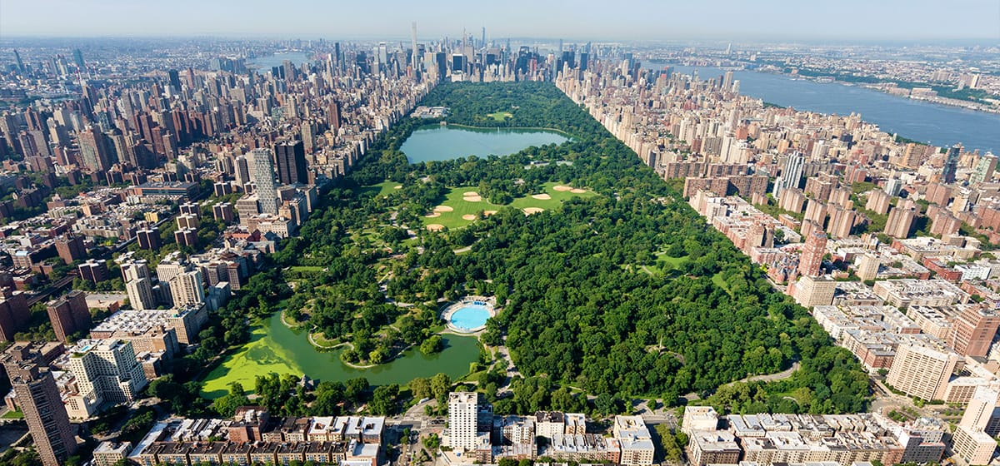
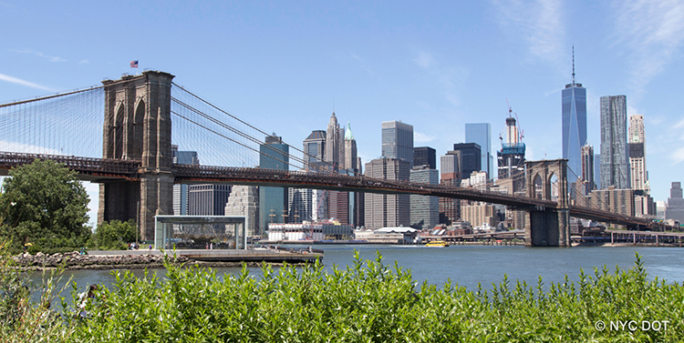
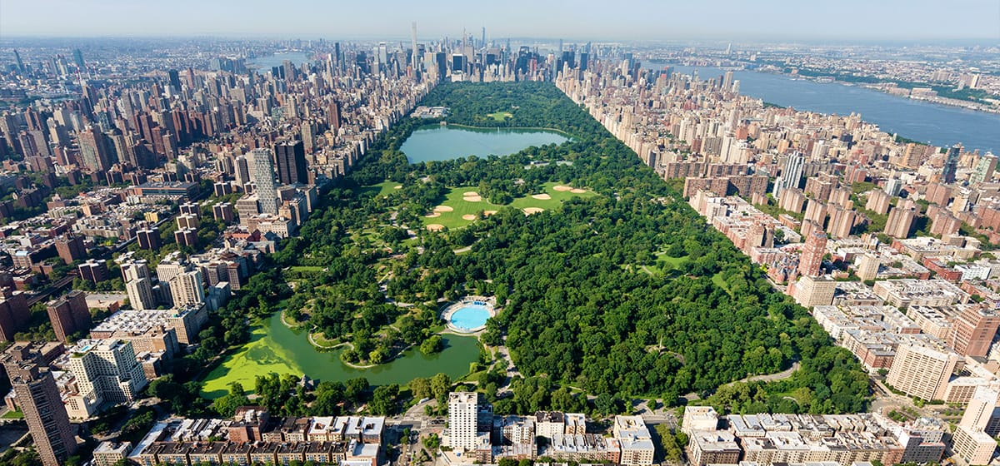
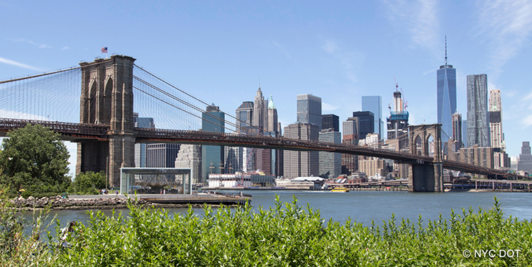

New York Itinerary: 5 Days of Excitement
New York City is a thrilling blend of cultures, art, food, and iconic sights. Here's your 5-day guide to the best of the Big Apple!
Day 1: Iconic Sights
- Morning: Visit the Statue of Liberty and Ellis Island.
- Afternoon: Explore Battery Park and Wall Street.
- Evening: Catch sunset views from One World Observatory.
- Food: Try New York-style pizza.
Day 2: Midtown Wonders
- Morning: Visit Times Square and Broadway.
- Afternoon: Explore Rockefeller Center and St. Patrick’s Cathedral.
- Evening: Top of the Rock observatory visit.
- Food: Grab a hot dog from a street vendor.
Day 3: Culture & Art
- Morning: Explore the Metropolitan Museum of Art.
- Afternoon: Walk through Central Park.
- Evening: Visit the Guggenheim Museum or catch a jazz show.
- Food: Try bagels with lox and cream cheese.
Day 4: Trendy NYC
- Morning: Stroll High Line Park.
- Afternoon: Explore Chelsea Market and Greenwich Village.
- Evening: Visit Little Italy or Chinatown for dinner.
- Food: Sample dumplings or cannoli.
Day 5: Bridges & Views
- Morning: Walk across the Brooklyn Bridge.
- Afternoon: Explore DUMBO and Brooklyn Heights.
- Evening: Catch cityscape views from Brooklyn Bridge Park.
- Food: Try a New York cheesecake slice.
Bonus (Optional Day 6-7 ideas): Day trips to Niagara Falls or The Hamptons.

 


